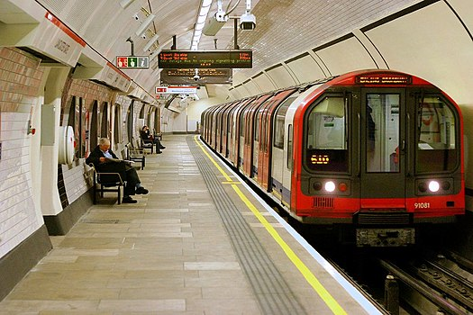

Метро — Городская внеуличная железная дорога, имеющая собственный габарит, инженерно отделённая от любого другого транспорта и пешеходного движения и предназначенная для пассажирского движения.
Может быть подземным (в тоннелях), наземным (на поверхности земли) и надземным (на эстакадах)
В общем случае, метрополитен — это любая внеуличная городская пассажирская транспортная система с курсирующими по ней маршрутными поездами (например, городской монорельс).
Движение поездов в метрополитене регулярное, согласно графику движения. Метрополитену свойственны высокая маршрутная скорость (до 80 км/ч) и провозная способность (до 60 тыс. пассажиров в час в одном направлении).
Крупнейшие метрополитены в мире:
Самые маленькие метрополитены: в иранском Тебризе, венесуэльском Маракайбо, итальянских Катании и Генуе, украинском Днепре.
Лозанна, Брешиа и Ренн — самые маленькие города мира, имеющие метрополитен.
Большое разнообразие систем внеуличного скоростного городского и пригородного транспорта делает затруднительной однозначную их классификацию. Все определения метрополитена условны.В отношении многих транспортных систем можно с уверенностью сказать, что они являются (или, наоборот, не являются) метрополитенами, но в то же время существует ряд «пограничных» и «гибридных» транспортных систем.
Конечное решение о том, отнести ту или иную транспортную систему к метрополитенам или нет, зависит от принятого определения или может делаться эмпирически. Например, в Зерфаусе и Новом Афоне существуют подземные железные дороги, имеющие некоторое сходство с подземными линиями метрополитена и потому неформально часто так и называемые, однако если обязательным признаком метрополитена считать расположение в городе, то метрополитенами они не являются.
В 1981 году Комитет метрополитенов МСОТ предложил такое определение «метрополитеновской железной дороги»:
Также он предлагает ещё один признак: совпадение уровня пола вагона и перрона, но этот признак не обязателен. При этом не указано, какой должна быть путевая инфраструктура. То есть, по Швандлю, она может быть практически любой: традиционные рельсовые пути (традиционный метрополитен), ALWEG (наиболее распространённый тип городских пассажирских монорельсов) и так далее.
 Это определение обладает некоторой условностью. Под него не подпадает, например, Чикагский метрополитен, который имеет несколько одноуровневых пересечений с дорогами[4] (хотя Швандль всё равно рассматривает эту систему как метрополитен в виде исключения). Ряд метрополитенов в прошлом работали на иных видах тяги (паровая, канатная), а в некоторых метрополитенах имеются отдельные участки с низкой интенсивностью работы.
Это определение обладает некоторой условностью. Под него не подпадает, например, Чикагский метрополитен, который имеет несколько одноуровневых пересечений с дорогами[4] (хотя Швандль всё равно рассматривает эту систему как метрополитен в виде исключения). Ряд метрополитенов в прошлом работали на иных видах тяги (паровая, канатная), а в некоторых метрополитенах имеются отдельные участки с низкой интенсивностью работы.
В частности, Швандль рассматривает Вуппертальскую подвесную дорогу как полноценную систему метрополитена, что может быть недопустимо с точки зрения других определений, накладывающих разные по строгости ограничения на техническую реализацию метрополитена.
Первая линия метрополитена длиной 6 км была построена в Лондоне. Запущена 10 января 1863 года[7]. Изначально первая линия в Лондоне эксплуатировалась на паровой тяге, которая начиная с 1890 года заменялась на электрическую.
Второй метрополитен был открыт в Нью-Йорке в 1868 как надземный, однако первые надземные участки не сохранились и впоследствии были заменены подземными (первая подземная линия открыта в 1904).
6 июня 1892 — открыта первая надземная линия метрополитена Чикаго на паровой тяге.
В Европе старейшими после Лондонского метрополитена являются метрополитены Будапешта (1896), Глазго (1896), Парижа (1900), Берлина (1902), Гамбурга(1912).

Строительство метро стоит очень дорого, и поэтому бывает экономически оправдано только в крупных городах (территориально или по численности населения). В СССР таковыми считались города с численностью населения от 1 млн жителей. Различают закрытый способ строительства (с помощью тоннелепроходческих щитов) и открытый, при котором тоннели и станции строятся соответственно в траншеях и котлованах и, будучи завершёнными, снова засыпаются грунтом.
Закрытый способ применяется при строительстве линий глубокого заложения, когда этого требуют гидрогеологические условия или необходимо сохранить ценную застройку в городах. В иных случаях станции мелкого заложения строят открытым способом. Для линий мелкого заложения в России применяют также гибридный — «московский» — способ, когда станции строятся открытым способом, а тоннели — закрытым. Коммуникации необходимо переносить (когда они там есть) лишь в зонах строительства станций, а в зонах прокладки тоннелей перегонов такой необходимости нет.

Также не нужно временно закрывать дороги и т. д., поэтому строительство оказывается дешевле. По ценам 2006 года стоимость 1 км тоннеля, построенного открытым способом, составляет приблизительно 1,4 млрд руб., а 1 км тоннеля, построенного закрытым способом, — около 2—2,2 млрд руб. Необходимо также учитывать, что эти цифры приведены для одного однопутного тоннеля. Учитывая, что линии метрополитена, как правило, строится двухпутными и, как это обычно делается в России, каждый линейный путь прокладывается в отдельном тоннеле, — линия метро получается двухтоннельная. Следовательно, при расчётах стоимости строительства километра линии метро стоимость строительства километра однопутного тоннеля следует умножать на 2.
Станции используются для посадки и высадки пассажиров из вагонов. Подземные, а также надземно-эстакадные станции сообщаются с поверхностью с помощью вестибюлей, турникетов, эскалаторов (или просто лестничных сходов, а кое-где также лифтов для инвалидов), осуществляющих пропуск пассажиров. Конструктивно станции бывают колонного, пилонного, односводчатого и смежных типов, а по расположению платформ относительно путей делятся на островные и береговые. Существуют многопутные и многоуровневые пересадочные станции. Некоторые станции сооружаются закрытого типа со стенами и дверями — преимущественно стеклянными — между платформой и поездом. Многие станции Московского, Петербургского, Пхеньянского, Стокгольмского и ряда других метрополитенов оформлены как дворцовые залы или просто как архитектурные и художественные новаторства. Самой глубокой в мире станцией метро является станция Арсенальная в Киеве. Её глубина — 105,5 м.